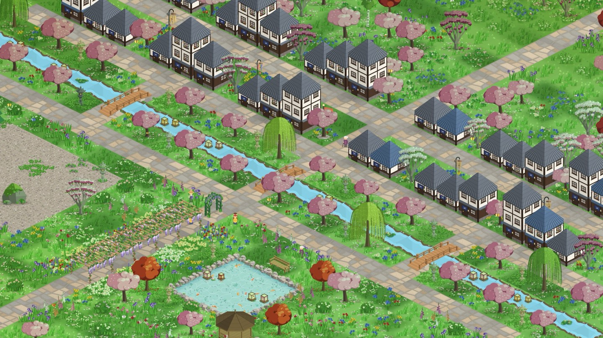
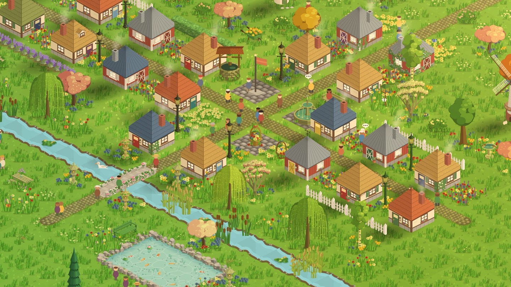
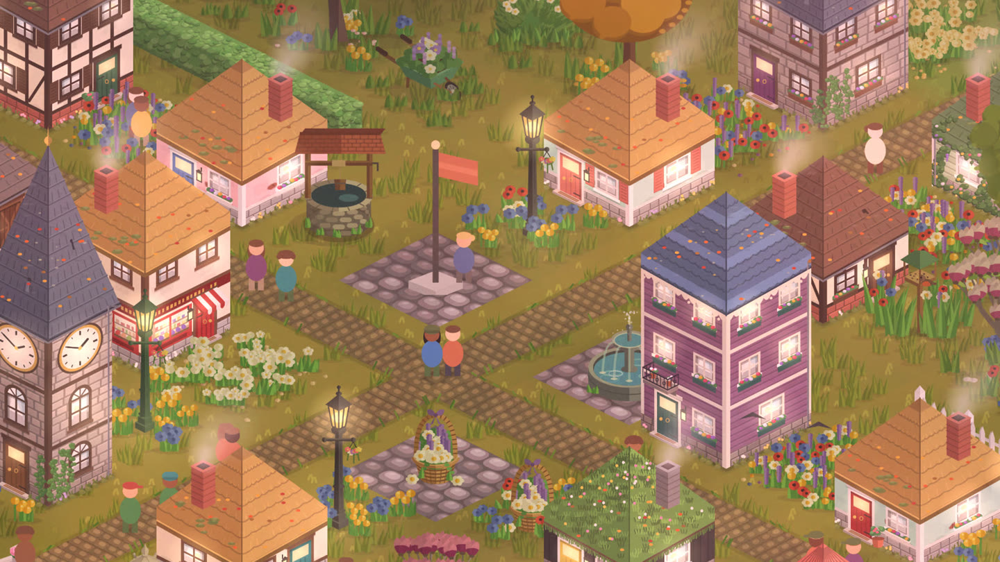
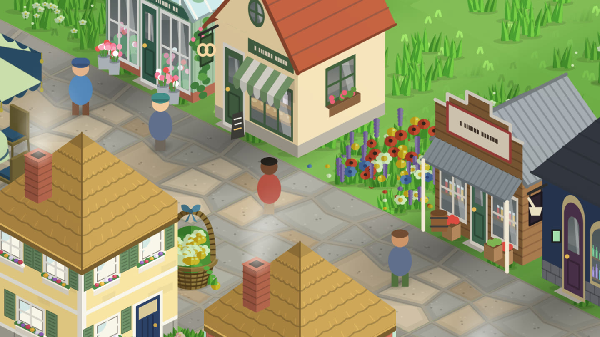
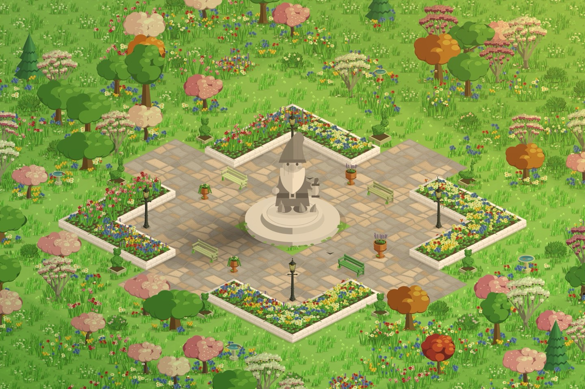
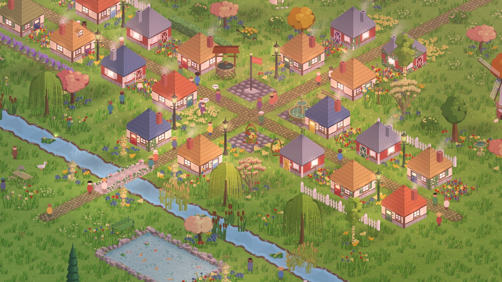
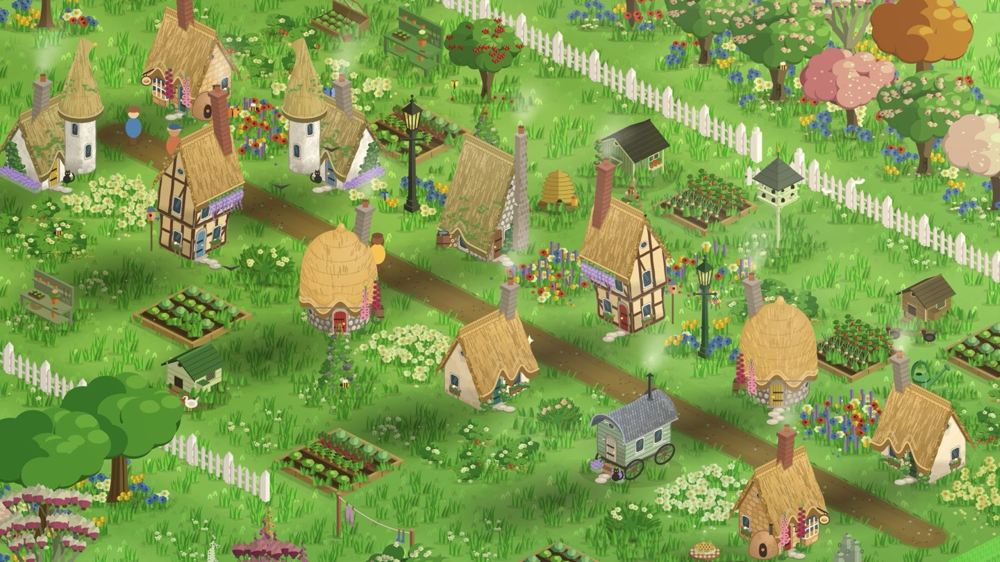

The StepHavenJournal
Notes on the cozy town builder you play by walking: how it works, who it's for, and what's new in the village.
Try the StepHaven build planner to price your next project and keep a checklist of its pieces.

Games like Pikmin Bloom, but you build a town
Love Pikmin Bloom's gentle walking but want something to shape yourself? Six games, sorted by what you like about it.

StepHaven vs Pikmin Bloom
One you play on the walk, the other after it. An honest side-by-side, with facts you can check.

A walking game that won't make you feel guilty
No streaks to lose, no timers, no ads. Miss a few days and every step you walked still counts.

A cozy game you play by walking
Using a walking pad with your phone on the desk? Check which steps count, then build a town in short breaks.

Your first week in StepHaven
A beginner's guide: what to build first, the daily present, the visitors who come to town and the Workshop.
Seasons, sunsets and full moons
Your town keeps the real clock and the real calendar: lamplit nights, foggy evenings, winter snow and a fair on every full moon.

Walking games for iPhone, honestly compared
Compare nine iPhone games, including four ways to play on a treadmill with your phone or Apple Watch.

A cozy town with no image files
How every tree, cottage and villager is drawn by code while you play, and the bugs that taught me the most.
How StepHaven turns your steps into a town
See what 182 steps can build. Two views of the same village corner show exactly where the points went.
Every kind of moving counts
Wheelchair pushes count like steps, and Ember turns rides, swims and other workouts into points.

A walking game where friends build one town together
See how two friends on different walking schedules can build one garden corner with the steps each earned.